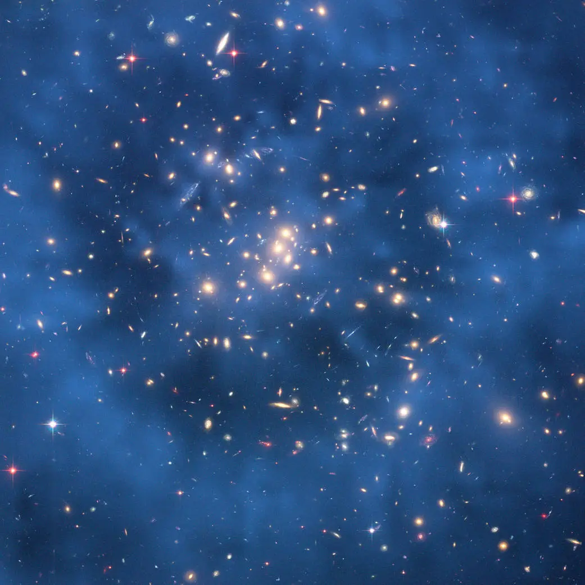

The Greatest Questions
Universe & Theories


The Big Bang
13.8 billion years ago, the universe emerged from an infinitely hot, dense singularity. In the first 10⁻³² seconds, cosmic inflation expanded space exponentially. The CMB — detected in 1965 — is the fossil light from this era, cooled to 2.73 K by the universe's expansion.

Dark Matter
27% of the universe by mass-energy, dark matter is invisible yet detectable through gravitational lensing. The Bullet Cluster collision provided the most direct evidence — hot gas slowed down, but dark matter (shown in blue by lensing maps) sailed straight through.

Dark Energy
In 1998, type Ia supernovae revealed the universe's expansion is accelerating — the opposite of what gravity alone would predict. This mysterious repulsive force, comprising 68% of the cosmos, may be Einstein's cosmological constant Λ: the energy of empty space itself.

Wormholes
Einstein-Rosen bridges emerge from general relativity's field equations as tunnels through spacetime. A traversable wormhole would require exotic matter with negative energy density. Physicist Kip Thorne's calculations directly informed the visuals in the film Interstellar.

The Multiverse
Eternal inflation theory predicts our Big Bang was one of infinitely many, each spawning a bubble universe with potentially different physical constants. The many-worlds interpretation of quantum mechanics implies every quantum event creates branching realities — making the multiverse one of the most profound and controversial ideas in science.

Cosmic Endpoints
Three scenarios dominate: the Big Freeze — galaxies drift apart, stars die, black holes evaporate into darkness; the Big Rip — accelerating expansion tears apart matter itself; the Big Crunch — gravity reclaims everything into a new singularity. Current evidence favors the Big Freeze, trillions of years hence.
"The universe is under no obligation to make sense to you."— Neil deGrasse Tyson